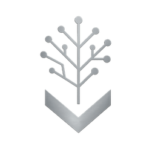

Good TransformerDecision guide · One piece of work
AI can give one person a team's output. The question is which mode the work needs. Size the task on the three questions, then choose solo, expert or team, each working with AI.
Easy to undo a mistake, or does it land and stay?
One right answer, or a matter of judgement and competing views?
Cheap and quick to catch, or seriously damaging?
Reversible, lower-stakes, self-contained.
Judgement-heavy, higher-stakes, individual.
Contested, high-consequence, cross-disciplinary.
The rule of thumb: reversible and low-stakes goes Solo. Judgement-heavy goes Expert. Contested, high-consequence or cross-disciplinary goes Team. The new failure mode is running team-grade work as solo-plus-AI because the tool made it possible: fast, polished and unchallenged.